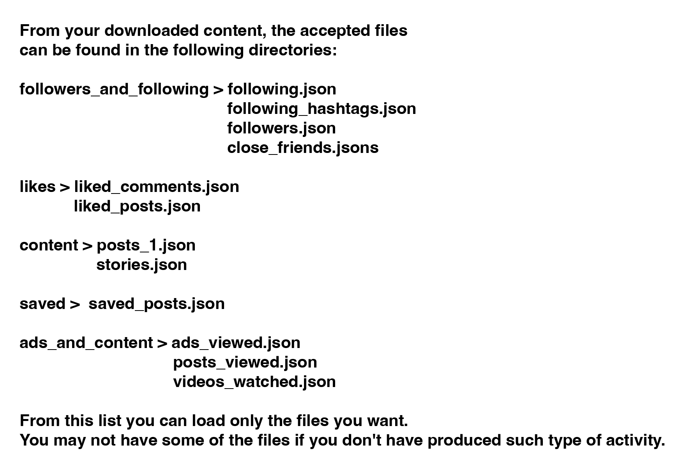
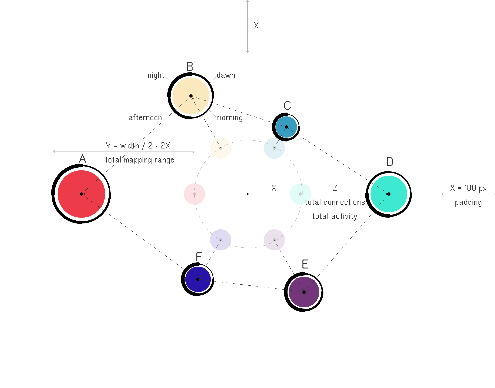
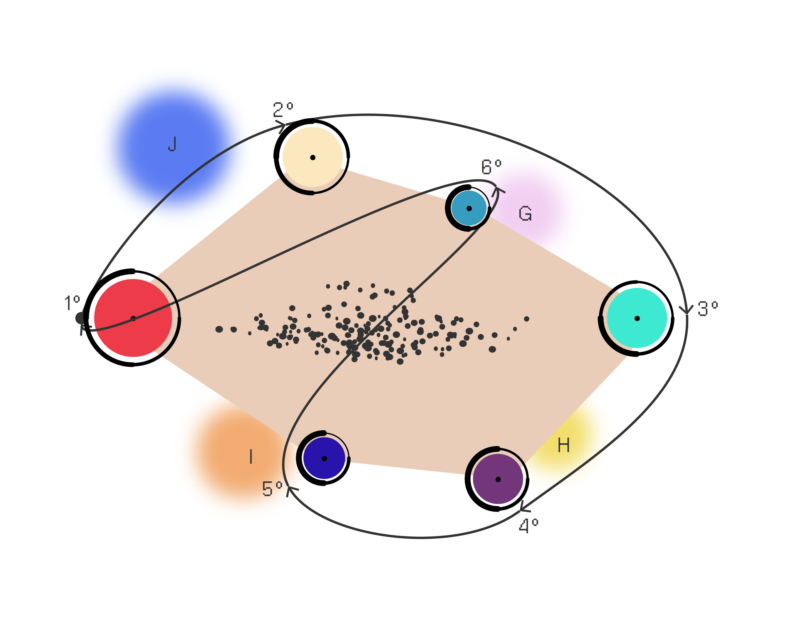

Personal▒Instants
Personal Instants is a visual representation of your activity on Instagram. It aims to reveal the huge amount of data and content that we produce in this virtual universe and reveal which type of user we are. You can explore your entire activity (download @ Instagram settings) to understand a little better the behavior you have on the social network. Personal Instants also provides the possibility to generate your personal artifact using your data.
X
X
 Visualization Mode
l▒I
•¤*
Displayed Organisms
Personal Instants is a visual representation of your activity on Instagram. It aims to reveal the huge amount of data and content that we produce in this virtual universe and reveal which type of user we are. You can explore your entire activity (download @ Instagram settings) to understand a little better the behavior you have on the social network. Personal Instants also provides the possibility to generate your personal artifact using your data.